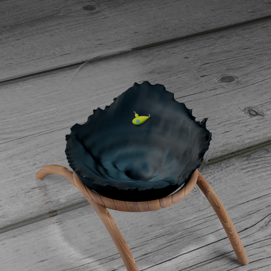
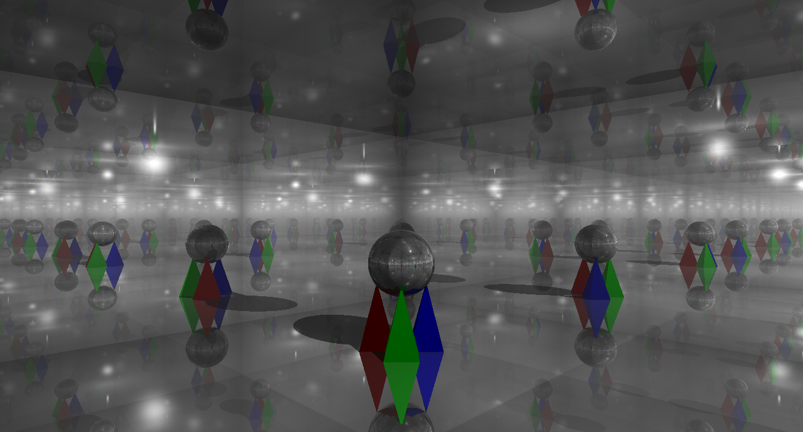

Cody Fulford
I am a computer programmer, graduated from the University of Calgary in 2017 with a BSC in computer science and a specialization in computer graphics.
I currently work at Integrity Post Structures alongside Kevin Hill developing a custom suite of CRM software
Career
Integrity Post Structures
Full Stack Development & IT - Current
- Full stack web development (HTML, CSS/Bootstrap, PHP, javascript/jQuery)
- Database Design and Management (MySQL)
- Model-View-Controller(MVC) Framework
- Small team version control (Subversion)
- General IT (Majority Windows 10 users)
- Ubuntu Development Environment
- GSuite Administrator Duties
iCube Development
Assistant Technician - 2015-2016
- Data recovery using both software and hardware methods
- IT services for contracted clients both on and off-site (over phone and remote desktop)
- Required to keep exemplary work order notes for both clients and other technicians to review
- Trusted to handle critical/confidential client data
- Designed and constructed 3D printers
Glencoe Golf & Country Club
Groundskeeper - 2013-2014
Heritage Park Historical Village
Retail - 2010-2012
Volunteering
Calgary Stampede - Downtown Attractions Committee (DTA)
I became a volunteer in the spring of 2017. In 2018 I earned the Above And Beyond Award from the DTA for my efforts.

Credit to @dfulford20 on Twitter Link
Football Coaching - Dr. E.P. Scarlett High School
I started coaching the year I graduated from Scarlett. I began my coaching career as the coach of our junior teams (grade 10 students) offensive line, the position that I had played. After 3 seasons (2012-2015), I was promoted to offensive coordinator.

Lancer coaching team 2012.
Projects
Real-time Parametric Boolean Operations Link
NURBS Defined Rollercoaster with Basic Physics Link
BOIDS Simulation Link
NURBS Curve Creator Link
Spirograph Creator Link
Physics Simulation - Cloth (Pinning and collision) Link
Physics Simulation - Jello Cube Link
Physics Simulation - Single Weight Link
Animations
Rocket Man Link
For The Love Of Toast Link
Renders
Asteroid Belt
Fish Bowl

Hall of Mirrors
